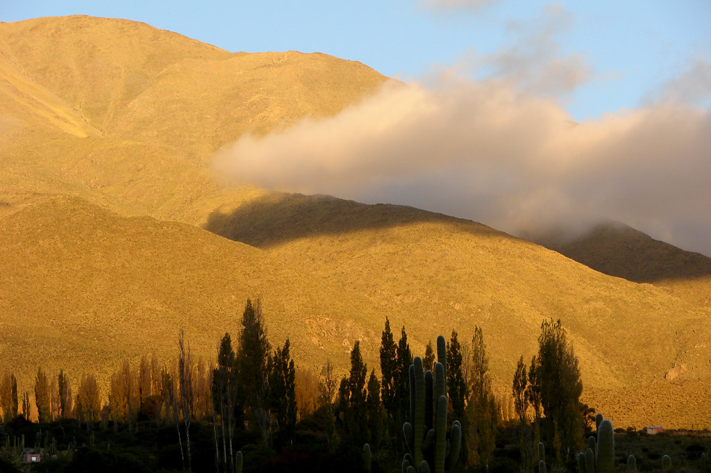

Viajeros Argentinos
Aprenda todo lo que hay que saber sobre las famosas Cataratas del Iguazú en esta visita guiada de un día completo por el lado argentino desde Puerto Iguazú. No se preocupe por la navegación o las direcciones, ya que se proporciona transporte de ida y vuelta. Su guía lidera la exploración de las cascadas con caminatas por senderos que ofrecen vistas de la famosa Garganta del Diablo. Tome fotografías de las cataratas desde múltiples puntos de vista.
Déjate seducir por el fascinante paisaje de Península Valdés en esta excursión de un día completo desde Puerto Madryn. Admire la fascinante belleza de esta famosa reserva de vida silvestre de la Patagonia, declarada Patrimonio de la Humanidad por la UNESCO. Opcional: Si eliges la opción "incluye navegación para avistamiento de ballenas", ¡obtendrás una vista más cercana de esta maravilla natural desde el agua! ¡Esta es una experiencia única que no te puedes perder!.
El noroeste de Argentina es famoso por sus extraordinarios paisajes y el exclusivo vino Torrontes y esta excursión de día completo desde Salta combina ambos en una excursión. Viaje a través de los espectaculares valles de Calchaquí, maravíllese ante coloridas formaciones rocosas como la Garganta del Diablo, el Anfiteatro y los Castillos en la reserva Quebrada de las Conchas para, a continuación, disfrutar de una cata de vinos en algunas de las bodegas más famosas de Cafayate.
¡Descubre la majestuosidad de Mendoza! Desde Las Cuevas hasta el imponente Cerro Aconcagua, este tour te llevará a lugares únicos como Potrerillos, Valle de Uspallata, Penitentes, Puente del Inca, Puente Picheuta y el Mirador Cerro Aconcagua. ¡Vive la emoción de explorar la belleza de la cordillera de Los Andes!.